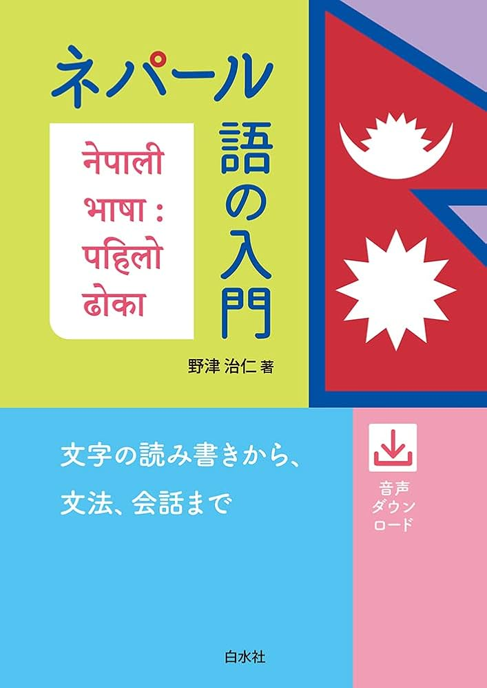

ネパール語教室
ネパール語教室受講生の皆さん
ネパール語教室へようこそ！
これから一緒に、楽しくネパール語を学んでいきましょう。
文字の読み方から簡単な日常会話まで、ゆっくり・無理なくステップアップしていきます。
わからないことがあれば、いつでも気軽にどうぞ。
レッスン日程
| 曜日 | 時間 | 場所 |
|---|---|---|
| 毎週土曜日 | 14:30〜16:00 | 4階 第1会議室 |
目標
8ヶ月でネパール語の基本的な読み書きと簡単な会話ができるようになることを目標とします。 数字や日付、時間の表現を理解し、簡単なやり取りができるようにします。 また、ポスターやチラシの内容を理解し、自分で簡単なチラシやポスターを作れるようになることを目指します。
持ち物
- ノート(テストで書いてもらったことを家でチェックしたいのでルーズリーフも持参してもらうと便利)
- 筆記用具
使用図書
野津治仁 著『ネパール語の入門』白水社

関連リンク
福岡よかトピア国際交流財団「みんなの掲示板
①みんなの掲示板はこちら
②文字練習
③単語練習
以下説明動画が入っているので発音まだ難しく感じる方はご覧ください
-
母音
子音①
子音②
子音③
子音④
子音⑤
子音⑥
子音⑦ -
自己紹介・母音・数字
2026/7/18
第1回講義資料(母音)
第1回単語
宿題提出
-
デーヴァナーガリー文字（子音）と発音
2026/7/25
宿題のフォームズを直したので追加してください。
第2回講義資料(子音)
宿題提出
-
組み合わせと発音①
2026/8/1
第3回講義資料
宿題提出
-
組み合わせと発音②
2026/8/8
第4回講義資料
-
挨拶・親族関係図・数字
2026/8/22
第5回講義資料
-
レッスン①と②
2026/9/5
第6回講義資料
-
レッスン③
2026/9/12
第7回講義資料
-
レッスン④
2026/9/19
第8回講義資料
複数形
ワードquiz
-
レッスン⑤
2026/9/26
第9回講義資料
-
動詞活用スライド
2026/10/3
第10回講義資料
- 第11回講義資料
2026/10/3
動詞の肯定形 練習問題
動詞の否定形 練習問題
- 文法練習
2026/10/9
第12回講義資料
追記
- 文法練習
2026/10/9
第13回講義資料